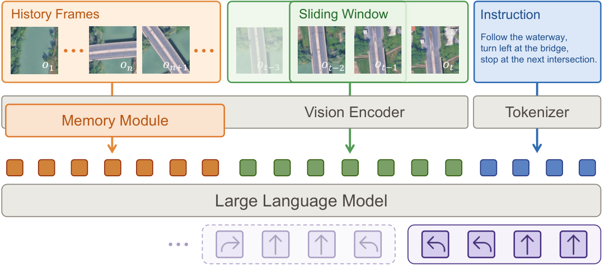

Problem Setup
01 · Task, Observations, and Actions
SatNav 研究语言引导的长程导航：智能体收到任务指令，在移动过程中观察当前局部图像，并决定前进、左转、右转或停止。它用高分辨率卫星图的旋转裁剪近似无人机垂直下视画面，以降低跨城市构建环境的成本。全局地图用于环境和标注构建，普通策略每步看到的是局部视图。
默认视图覆盖真实地面 100×100 米，缩放为 448×448 像素，并让当前朝向始终指向画面上方。裁剪时校正 Web Mercator 随纬度变化的尺度，因此同样像素大小在不同城市仍对应相同地面范围。这相当于固定高度约 50 米、水平视场角 90 度的简化观测模型。
动作空间只有 forward 10 米、left/right 各 15 度和 stop。没有高度变化、速度调节、起降或真实障碍碰撞动力学。论文的重点是沿大尺度地理结构理解指令、记住进度和正确停止；不能把基准成功率直接称作任意环境中的完整无人机自主飞行能力。
Dataset Design
02 · Why the Three Task Families Need Different Memories
Boundary 要沿湖泊、场馆或建筑群边界前进，包含不足一圈、完整一圈和超过一圈三种任务。相同位置可能在起点、中途重访和终点出现，单张图像未必能判断应继续还是停止，因此需要历史进度。
Landmark 用可辨认的地标约束转向，例如让某个屋顶出现在当前视野的指定方位后继续前进。关键是把语言对象与图像区域对应，再转换到当前朝向。Route 则沿道路或水道前进，按第几个桥、路口或汇流点转弯、停止，强调事件顺序和计数。三类任务不是同一种“长上下文”问题。
数据由卫星图和 OSM 共同构建。边界用 OSM polygon 提供候选，再由 SAM 校正图像边缘；路线由道路、水道图生成；地标经过视觉定位与验证。Qwen3.5 生成线索描述和指令原型，Gemini 3 Flash 改写语言并核对其与轨迹线索的关系。几何可执行性和语言一致性是分别检查的。
数据共 118,494 个 episode，来自 18 个城市、59 个场景，平均轨迹 379 米、中位数 340 米。Test Seen 的 4,574 条轨迹来自训练中出现的三个场景，但轨迹和指令重新生成；Test Unseen 的 8,756 条来自三个新城市中的三个新场景。后者检验地理迁移，不能用前者替代。人工抽检 3,000 个候选中接受 94.3%，这是样本审计，不代表所有条目都被人工逐一阅读。
Architecture
03 · Figure 4: How Context Becomes an Action Chunk

Jiajun Jiang et al. · 2026 · Paper: CC BY 4.0 · Unmodified original figure · Paper & Caption ↗
原图左上橙色区域是更早历史，绿色是当前滑动窗口，蓝色是语言指令。图像经过共享视觉编码器；长期 memory 模块将旧观测压缩，近期窗口保留图像—动作对话。它们与指令 token 共同输入语言模型，右下输出接下来的一组动作。
这里的 t 是模型查询轮次，不是每个物理动作步。默认一次输出四个动作，执行完队列才发起下一次查询。近期窗口最多八个图像—动作轮次，因此一个窗口大致对应最多 32 个动作的决策内容；八轮不能误写成八帧连续控制。
窗口滑动时移除最老的轮次，并可保留 N_o 个重叠轮次。长期记忆只在窗口滑动时从窗口之前的历史重新构建，窗口内部不是每次动作都重新聚合全部历史。参照配置 N_w=8、N_o=0；默认从早期历史均匀采样八张图，每张平均池化到 64 token，合计 512。
因此，记忆模块控制模型当前能够读取什么，但不一定控制完整历史的底层存储。尤其 GTC 和 STC 需要读取窗口之前的历史 token 来重建压缩结果；最终输出 512 token，并不自动保证历史收集和聚类成本恒定。
Cₜ = Φ(instruction, current observation, Sₜ, Lₜ) Aₜ = Parse(fθ(Cₜ)), |Aₜ| = 4 Lₜ = M(history before the current window) Default history budget = 8 frames × 64 tokens = 512 tokens
Mechanisms
04 · What Each Memory Variant Changes
历史帧采样对照保持帧数为八，比较均匀、随机和偏向近期的采样。近期偏置的指数为 2，使较新的观测密度更高，同时保留少量较早锚点。它改变的是证据的时间分布，没有生成新的语义摘要。
初始帧提示在系统上下文中额外放入起点图像，使用 256 个视觉 token；原有 512-token 历史仍保留。因此这项对照不属于相同总输入 token 数。相对位姿则编码相对起点的前向、右向位移及朝向，使用两层 MLP 生成 FiLM 的 γ、β，对每帧视觉 token 作缩放和平移。末层零初始化，让训练开始时不改变原特征。
GTC 将所有窗口前的历史 token 合在一起，做一次基于余弦相似度的 soft k-means，压到 512 token；温度为 0.1。STC 也利用全部早期历史，但先划分为八个时间段，各段独立聚类，再按从早到晚拼接。它保留粗时间顺序，适合判断某个路口是在前一个还是后一个事件之后出现。
Map Memory 用两张北向朝上的地图替代历史帧：起点中心的 1,000 米全局裁剪和当前位置中心的 400 米局部裁剪，未知区域遮蔽，加入已走轨迹与位姿标记。两张图各 256 token，仍为 512。它依赖环境正射影像和累计轨迹，不是从单目输入自行完成的三维重建地图。
pᵢ = [tanh(Δ_forward/100), tanh(Δ_right/100), sin(Δ_heading), cos(Δ_heading)] [γᵢ,βᵢ] = MLP(pᵢ) X′ᵢ = Xᵢ ⊙ (1+γᵢ) + βᵢ
Training
05 · Training and Satellite-to-UAV Adaptation
SwiftVLN 参照模型为 Qwen2.5-VL-3B-Instruct，在离线专家轨迹上以 teacher forcing 训练动作文本。论文配置为全参数微调、一个 epoch、AdamW、全局 batch 64、峰值学习率 2e−5，使用八张 H100 80 GB。策略在评测时执行在线 rollout，但训练本身不是在线强化学习。
所有基线都在 SatNav 上训练或微调。主表星号表示从已在原导航任务上训练的 checkpoint 继续微调；无星号模型从各自基础骨干初始化。最强 StreamVLN* 是导航预训练 7B，SwiftVLN 是通用 3B 起点，两者不能当作只有 memory 不同的受控对照。memory 结论应主要读 SwiftVLN 内部消融。
迁移到真实无人机时，作者用 24,467 对无人机—卫星配对图像，其中 21,216 对训练、3,251 对验证，训练两层 Transformer adapter。冻结视觉塔分别提取两域 token，仅对 UAV token 施加 adapter，卫星表示作为目标。训练损失包括池化特征的余弦损失，以及共享投影空间中的双向对比损失。
这个 adapter 训练只优化适配器和投影头，不能与上面的导航全参数微调混为一谈。推理时 adapter 放在视觉编码器与导航骨干之间，使真实 UAV 视觉特征接近策略训练时见到的卫星表示。
Evaluation Protocol
06 · Reading Success, Oracle Success, and Path Efficiency
SR 要求模型在目标半径内主动输出 stop；OS 只检查轨迹是否曾经过该区域。一般任务阈值为 10 米，Landmark 为 30 米。Boundary 在起终点可能重合时，还要求先离起点超过 20 米才计后续返回，避免初始原地停止即成功。项目页交互示例采用自己的展示参数，本文数字以论文评测协议为准。
SPL 以成功为前提，用参考路线长度除以参考长度与实际长度的较大值，对绕路进行惩罚。NE 是最终位置到目标的距离。SR 与 OS 的差距能暴露“经过了目标却没有正确停止”，而不仅是空间定位失败。
Test Unseen 中 SwiftVLN 的 SR/OS 为 53.7/64.1，StreamVLN* 为 58.4/68.3；但 NE 分别为 62.29 和 86.63 米。前者平均末端距离更小，后者成功 episode 更多，两个统计不矛盾。CMA 的 SR 7.3、OS 43.9 则表明只读到达率会严重高估任务完成度。
SPLᵢ = Successᵢ · L_reference / max(L_reference,L_executed)
| Test Unseen | SR (%) ↑ | OS (%) ↑ | NE (m) ↓ |
|---|---|---|---|
| CMA | 7.3 | 43.9 | 363.59 |
| StreamVLN* | 58.4 | 68.3 | 86.63 |
| SwiftVLN | 53.7 | 64.1 | 62.29 |
Evidence
07 · Memory Ablations: Continuity Matters More than a New Label
去掉长期记忆后，未见城市 SR 从 53.7 降到 32.4，差 21.3 个百分点。保留四轮重叠的滑动窗口达到 60.3，较参照提高 6.6 点；随机历史采样却降到 41.1。这些结果支持保留可衔接的时间上下文，而不是认为任意八张历史图都同样有用。
GTC 的未见 SR 为 51.4，STC 为 54.5，两者相差 3.1 点。它们都使用所有窗口前的历史和同样的 512-token 输出预算，区别主要在于是否分段保留时间顺序。这比跨不同骨干比较更直接地支持时间结构的作用；STC 相对参照只提高 0.8 点，也不应夸大。
地图记忆的未见 SR 为 48.7，低于参照 53.7。作者推测地图与原始观测共享视觉编码器造成表示折中，但没有通过独立地图编码器对照证明这个原因。合理结论是当前实现没有获得收益，不是地图表示必然无效。
起点图像提示将未见 OS 从 64.1 提到 67.5，SR 却从 53.7 降到 52.6，即使还增加了输入 token。起点锚点可能帮助重访目标区域，但不保证正确估计何时停下。这是区分记忆中“存到了什么”和策略“如何使用证据”的具体例子。
| Memory Variant | Unseen SR (%) ↑ | Unseen OS (%) ↑ |
|---|---|---|
| Reference | 53.7 | 64.1 |
| Short-term Only | 32.4 | 51.4 |
| Window Overlap: 4 Turns | 60.3 | 71.5 |
| Random History | 41.1 | 57.6 |
| Temporal-biased History | 55.8 | 66.3 |
| Map Memory | 48.7 | 63.1 |
| Global Token Clustering | 51.4 | 62.4 |
| Segment Token Clustering | 54.5 | 66.2 |
Scope and Analysis
08 · Transfer Evidence and Connections to Reconstruction Memory
真实实验使用 DJI Matrice 4D，图像传给地面工作站上的 RTX 4090，而不是所有模型计算都在机载完成。18 条 episode 每个任务家族各六条，加 adapter 后总体 SR 从 38.9% 到 55.6%，对应约 7/18 到 10/18；Boundary 仍是 33.3%。这是初步可行性证据，样本量尚不足以支持稳定的大范围部署结论。
附录还在 94 条由真实三维资产渲染的 UAV episode 上评估迁移：干净观测 SR 从 34.0 到 43.6，加入曝光与抖动后从 28.7 到 39.4。适配器有帮助，但没有消除域差。真实系统模型推理约 250 ms，视频转发常有 3–5 秒延迟，端到端速度主要受通信影响。
个人理解，SatNav 的价值是让 memory 的用途变得可检验：回环任务要保留进度，地标题要保留可定位的参照，路网任务要保留先后与计数。仅压缩视觉相似内容可能丢掉“这是第几次经过”的证据，这能解释为什么分段压缩值得研究，但不是对全部失败原因的证明。
与 Slot3R 联系，两者都说明最终给模型读多少 token 与底层历史如何保存是不同问题。前者强调空间地址内的状态差异，SatNav 强调跨时间的任务状态。将语义用于重建记忆时，可以研究它是否帮助选择对后续查询有用的证据，但需要同时保持几何精度、实例身份和预算约束；导航成功率不能替代重建误差。官方项目已提供基准与 SwiftVLN 入口，本笔记没有进行训练复现。
Discussion
Reading Questions
Is the policy given the entire satellite map?
普通策略输入为局部裁剪及历史。全局影像用于环境构建；Map Memory 是单独对照配置，还遮蔽未探索区域，不能把它混入普通策略的输入说明。
Does a 512-token memory have constant total cost?
没有这个保证。GTC、STC 从窗口前的完整历史重建压缩结果，原始历史保存和聚类计算需要另计；初始帧提示还额外增加 256 token。
Does higher oracle success imply better task completion?
不一定。OS 只要求曾到达，SR 要求正确 stop。初始帧提示就是 OS 提升而 SR 下降的对照。
What does the map-memory result establish?
建立的是当前共享视觉编码器、地图构造和训练设置下的结果。独立编码器是否能改善仍是作者解释与待验证方案，而不是已经完成的实验结论。
References
- Paper · arXiv:2609.31507v1 ↗
- Submission History ↗
- Official Project ↗
- Official Benchmark Platform ↗
- Official SwiftVLN Implementation ↗
- Paper License · CC BY 4.0 ↗
Original paper figures are attributed at each caption. The papers are distributed under CC BY 4.0; underlying third-party imagery retains its original rights. Explanations and analysis are personal reading notes, not author statements.
Verified on 2026-10-14. Paper results refer to the linked versions. Repository references were checked on this date.